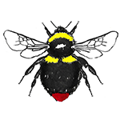
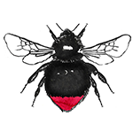
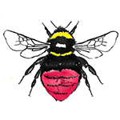
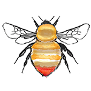

Red-Tailed Bumblebees


Five different true bumblebees have a red tail in Ireland. They are often some of the most striking. Bombus lapidarius is quite common around my part of the country(Limerick) and has a noticeable red tail that pops against the black background. It's this one that my father fondly refers to as the "red-arse bee." This bee's queens and workers can be easily confused with Bombus ruderarius. To tell them apart you must check out their little hairly legs. B. lapidarius has black hairy legs, but B. ruderarius has red! I like to tell people that I spend my time inspecting bees hairy legs; it always get's a raised eyebrow. Ruderarius is much rarer however and the places it lives have been greatly reduced. The Bombus sylvarum is also very rare so much so that its status is endangered.You might find it in the west if you're lucky.B. monticola has a restricted range, generally found up mountains. Bombus Pratorum is quite common and you've likely seen a few in your garden in early spring. They're an early riser. Sometimes the red tail can be hard to spot; it's often at the very top.
| Image | Bumblebee Name | Common Name | Tail | Banding | Queen size | Worker | Male | Leg | Status |
|---|---|---|---|---|---|---|---|---|---|
|  | Bombus Pratorum | Early Bumblebee | Red - may be very tip and hard to see | Yellow band thorax, yellow band abdomen but sometimes missing | Small up to 16mm | Same colouring as Queen, really small, might be missing middle band | Yellow face | Common | |
|  | Bombus lapidarius | Red-tailed Bumblebee | Noticeable Red tail | All black | Large up to 20mm | Same colouring as Queen | Yellow band on abdomen and yellow face. Hairs on legs are red | Black hairy legs | Common |
| Bombus ruderarius | Red shanked Carder Bee | Red | All black | Meduim up to 17mm | Same colouring as Queen | Disctinctive grey bands on abdomen and thorax, red tail | Red Hairy legs | Rare | |
|  | Bombus monticola | Mountain Bumblebee | Red -half of abdomen | Yellow band thorax, small yellow band in between thorax and abdomen | Small up to 16mm | Same colouring as Queen | Same colouring as Queen but with yellow face | Restricted Range | |
|  | Bombus sylvarum | Shrill Carder Bee | Red-Orange | Grey-Green with dark band thorax | Medium sized up to 17mm | Same colouring as Queen | Same colouring as Queen | Rare Endangered |